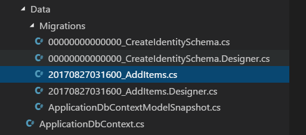

Crear una migración
Las migraciones hacen un seguimiento de los cambios en la estructura de la base de datos a lo largo del tiempo. Permiten deshacer (revertir) un conjunto de cambios o crear una segunda base de datos con la misma estructura que la primera. Con las migraciones, tiene un historial completo de modificaciones, como agregar o eliminar columnas (y tablas completas).
En el capítulo anterior, agregaste un conjunto de Tareas al contexto. Dado que el contexto ahora incluye un conjunto (o tabla) que no existe en la base de datos, debe crear una migración para actualizar la base de datos:
dotnet ef migrations add AddItems
Esto crea una nueva migración llamada AddItems al examinar cualquier cambio que hayas realizado en el contexto.
Si recibe un error como
No se ha encontrado el ejecutable que coincida con el comando" dotnet-ef ", asegúrese de estar en el directorio correcto. Estos comandos deben ejecutarse desde el directorio raíz del proyecto (donde se encuentra el archivoProgram.cs).
Si abres el directorio Data/Migrations, verás algunos archivos:

El primer archivo de migración (con un nombre como 00_CreateIdentitySchema.cs) se creó y se aplicó hace mucho cuando ejecutó dotnet new. La nueva migración de AddItem tiene el prefijo de una marca de tiempo cuando la creas.
Puede ver una lista de migraciones con
dotnet ef migrations list.
Si abre su archivo de migración, verá dos métodos llamados Up y Down:
Data/Migrations/
protected override void Up(MigrationBuilder migrationBuilder)
{
// (... some code)
migrationBuilder.CreateTable(
name: "Items",
columns: table => new
{
Id = table.Column<Guid>(nullable: false),
DueAt = table.Column<DateTimeOffset>(nullable: true),
IsDone = table.Column<bool>(nullable: false),
Title = table.Column<string>(nullable: true)
},
constraints: table =>
{
table.PrimaryKey("PK_Items", x => x.Id);
});
// (some code...)
}
protected override void Down(MigrationBuilder migrationBuilder)
{
// (... some code)
migrationBuilder.DropTable(
name: "Items");
// (some code...)
}
El método Up se ejecuta cuando aplica la migración a la base de datos. Dado que agregó un DbSet<TodoItem> al contexto de la base de datos, Entity Framework Core creará una tabla Items (con columnas que coinciden con un TodoItem) cuando aplique la migración.
El método Down hace lo contrario: si necesita deshacer (roll back) la migración, la tabla Elementos se eliminará.
Solución para las limitaciones de SQLite
Existen algunas limitaciones de SQLite que se interponen si intenta ejecutar la migración como está. Hasta que se solucione este problema, use esta solución:
- Comente o elimine las líneas
migrationBuilder.AddForeignKeyen el métodoUp. - Comente o elimine cualquier línea
migrationBuilder.DropForeignKeyen el métodoDown.
Si usa una base de datos SQL completa, como SQL Server o MySQL, esto no será un problema y no tendrá que hacer esta solución (la cual es ciertamente hacker).
Aplicar la migración
El último paso después de crear una (o más) migraciones es aplicarlas realmente a la base de datos:
dotnet ef database update
Este comando hará que Entity Framework Core cree la tabla Items en la base de datos.
Si desea revertir la base de datos, puede proporcionar el nombre de la migración anterior:
dotnet ef database update CreateIdentitySchemaEsto ejecutará los métodosDownde cualquier migración más reciente que la migración que especifique.Si necesita borrar por completo la base de datos y comenzar de nuevo, ejecute
dotnet ef database databaseseguido dedotnet ef database updatepara volver a armar la base de datos y llevarla a la migración actual.
¡Eso es! Tanto la base de datos como el contexto están listos para funcionar. A continuación, utilizará el contexto en su capa de servicio.